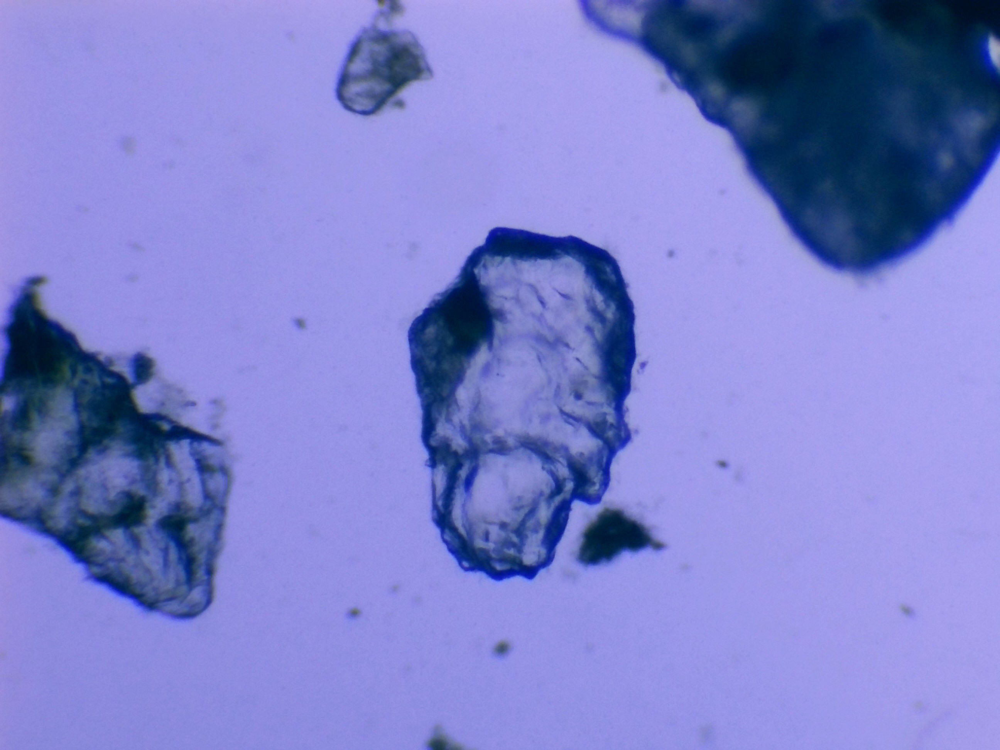
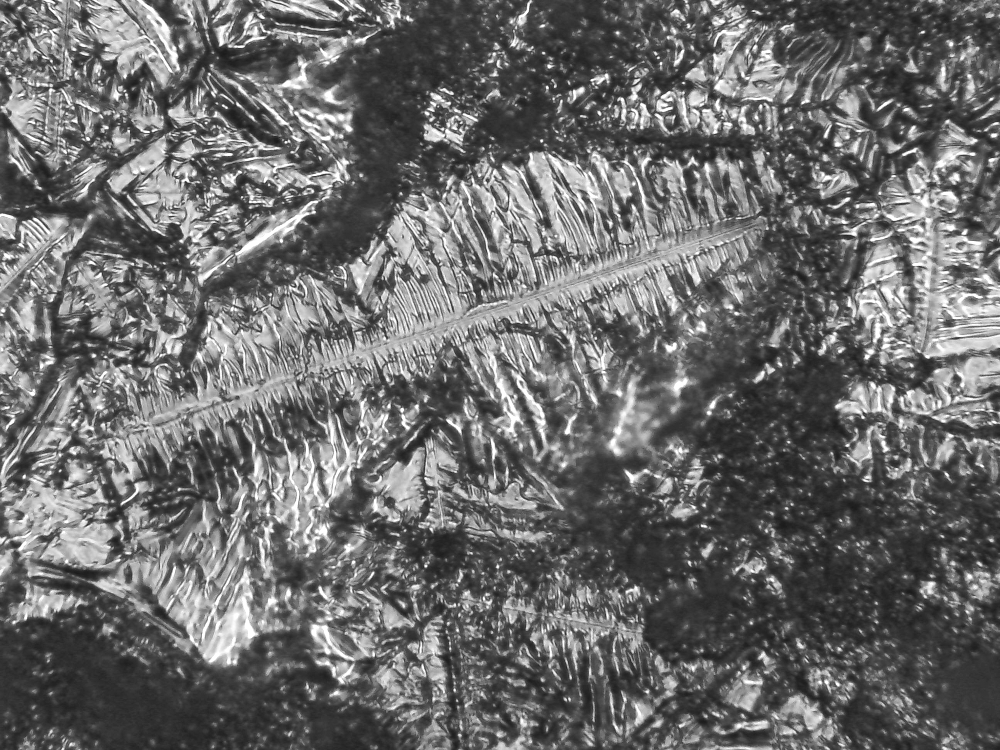

 Micro-organisme — Lumière naturelle Kyste desséché prélevé dans un pot d’eau contenant de la mousseline verte au repos depuis 7 mois.
Salive — 100× La lame contenant la salive a été passée sous une flamme pour la dessécher, donnant une teinte orangée.
 Sel — Crystal J'ai mis du sel dans l'eau et mis quelque goute sur une lamelle et chauffer a la flamme d'une bougie.